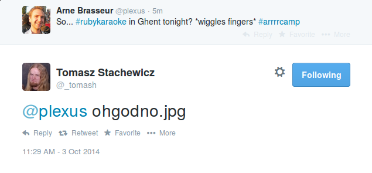
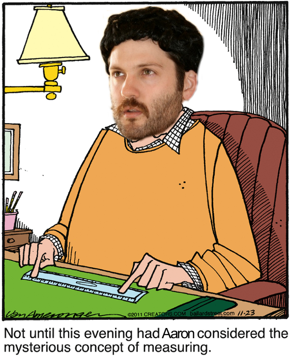

Use the space bar or arrow keys to browse the slide.
Some of the images are pretty big, so if you see an empty slide then wait a bit.
# Convert a lambda numeral to an integer
R = ->(n) { n.(->(i) { i+1 }, 0) }
# Zero, i.e. apply a function to an argument zero times
_0 = ->(f,x) { x }
succ = ->(n) { ->(f,x) { f.(n.(f,x)) } }
add = ->(n, m) { ->(f,x) { n.(f, m.(f,x)) } }
_1 = succ.(_0) ; _2 = succ.(_1)
_3 = succ.(_2) ; _4 = succ.(_3)
R[_0] # => 0
R[_3] # => 3
R[add.(_2, _3)] # => 5

Functional Programming for Rubyists
ArrrrCamp, Gent
2/3 October 2014

@plexus

/*
* Document-class: ObjectSpace::WeakMap
*
* An ObjectSpace::WeakMap object holds references to
* any objects, but those objects can get garbage
* collected.
*
* This class is mostly used internally by WeakRef,
* please use +lib/weakref.rb+ for the public
* interface.
*/
VALUE rb_cWeakMap = rb_define_class_under(
rb_mObjSpace, "WeakMap", rb_cObject);

https://leanpub.com/happylambda
Programming Paradigms
Imperative Programming
State + Instructions
Modeled after the machine
Evolutionary Steps
Procedural, group instructions
Object oriented, group state
Still imperative at heart
Place Oriented Programming
PLOP
PLOP
State is kept in “places”
Old information is overwritten with new
But real facts don’t change, they incorporate time
{ date: '2014-09-10', temperature: 19 }
{ date: '2014-09-11', temperature: 17 }
“New Wave” FP
Purely Functional Programming
Immutable Values + Pure Functions
Values
Not state, but Immutable Values
Both for primitives: 42, :foo
And composites: lists, sets, maps
Pure Functions
Same input ⇒ same output
No observable side effects
Follows naturally from using values
An expression is said to be referentially transparent if it can be replaced with its value without changing the behavior of a program.
Referential Transparency
Memoizable, Lazy evaluation
Parallelizable
Easy reasoning, refactoring, debugging, testing
Functional programming goes a long way towards avoiding the problems of state-derived complexity. This has very significant benefits.
The main weakness of functional programming is that problems arise when the system to be built must maintain state of some kind.
Times Are Changing
1995 Ruby
2003 Scala
2005 F#
2007 Clojure
2012 Elixir
The future is functional/multi-paradigm
Multi-Paradigm
OOTTP: FP + Relational
Haskell: FP + Type System
Clojure: FP + Reference Types
Ruby: ?
Data Structures


{kind=link}

{kind=link}
Ruby
Some functional inspiration
Lambdas, blocks, map, reduce, freeze
Lazy enumerators
What else?
Ruby
Still possible to code in a purely functional way
Use objects, but make them values
Have a core of “pure” domain logic
Handle state and side effects outside of that
Values in Ruby
true, false, nil
23, 42, 5.9999
:foo, :bar
Time, Date, Pathname
Gems
Immutable Structs
anima, concord, adamantium,
value_struct, value, values,
immutable_struct, immutable, attr_immutable,
value_object_struct, hamsterdam,
closed_struct, functional_accessor
Gems: Anima, Concord
Replacement for struct
class Ukulele
include Anima.new(:color, :tuning)
# def initialize(attrs)
# attr_reader :color, :tuning
# def ==(other)
# def eql?(other)
# def equal?(other)
# def to_h
end
u1 = Ukulele.new(color: 'green',
tuning: [:G, :C, :E, :A])
u2 = Ukulele.new(color: 'green',
tuning: [:G, :C, :E, :A])
u1 == u2 # => true
Gems: Adamantium
Freeze and memoize
class Point
include Concord.new(:x, :y), Adamantium
def vector_length
Math.sqrt(x*x + y*y)
end
memoize :vector_length
def to_a
[x, y]
end
memoize :to_a
end
Point.new(4,4).vector_length # => 5.656854249492381
Point.new(4,4).to_a << 7
# ~> can't modify frozen Array (RuntimeError)
Gems: Hamster
Purely Functional Data Structures in Pure Ruby
require 'hamster'
person = Hamster.hash(name: "Simon", gender: :male)
# => {name: "Simon", gender: :male}
person[:name]
# => "Simon"
person.get(:gender)
# => :male
friend = person.put(:name, "James")
# => {:name => "James", :gender => :male}
person
# => {:name => "Simon", :gender => :male}
Gems: Clojr
Wraps Clojure Data Structures and STM for JRuby
list = Clojr::STM::Ref.new
count = Clojr::STM::Ref.new
Clojr::STM.dosync do
list.set(Clojr::Persistent::Vector.new(*1..100))
count.set(0)
end
10.times.map do
Thread.new do
10.times do
Clojr::STM.dosync do
i1, i2 = rand(100), rand(100)
old_list = list.deref
new_list.assoc(i1, old_list[i2])
new_list.assoc(i2, old_list[i1])
list.set(new_list)
count.set(count.deref + 1)
end
end
end
end.map(&:join)
p list.deref
# => [99, 10, 79, 64, 40, 59, ...]
p count.deref
# => 100
Gems: Funkify
Haskell-like Currying and Partial Function Application
module Fun
include Funkify
auto_curry
def mul(a,b) a * b end
def add(a,b) a + b end
end
include Fun
(mul(5) * add(7)).(3) # => 50
module Composable
def compose(other)
->(*args) do
other.(self.(*args))
end
end
alias * compose
end
Proc.send(:include, Composable)
Method.send(:include, Composable)
(method(:mul).to_proc.curry.(5)
* method(:add).to_proc.curry.(7)).(3) # => 50